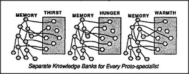
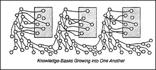

Imagine that a thirsty child has learned to reach for a nearby cup. What keeps that child, afterward, from reaching for a cup in every other circumstance — say, when it is lonely or when it is cold? How do we keep separate what we learn for satisfying different goals? One way is to maintain a separate memory bank for every distinct goal.
To make this work, we must restrict each specialist to learn only when its own goal is active. We can accomplish that by building them into a cross-exclusion system so that, for example, Hunger's memories can be formed only when Hunger is active. Such a system will never get confused about which memories to use. When it is hungry it will do only what it learned to do at previous times when it was hungry; it won't eat when it is thirsty or drink when it is hungry. But it would be too extravagant to have to keep completely different memories for every goal — since, as we said, most real-world goals engage the same kinds of knowledge about the world. Wouldn't it be better if all those specialists could share a common, general-purpose memory?
This would lead to problems, too. Whenever any specialist tried to rearrange some memories to its own advantage, it might damage structures upon which the others have come to depend. There would be too many unpredictable interactions. How could specialists cooperate and share what they have learned? If they were like people, they could communicate, negotiate, and organize. But because each separate specialist is much too small and specialized to understand how the others work, the best each can do is learn to exploit what the others can do, without understanding how they do it.